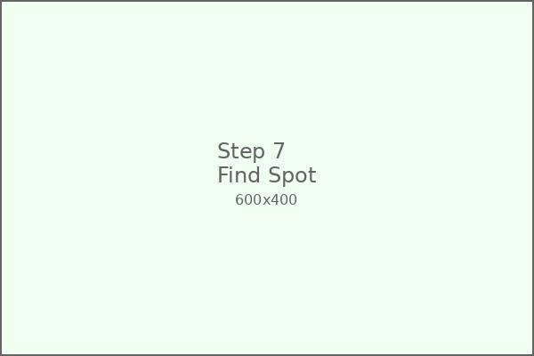

üíé Crystal Garden
Grow your own beautiful crystals at home! This amazing science experiment teaches crystallization, patience, and the fascinating world of chemistry through hands-on discovery.
üõçÔ∏è Materials Needed

Table Salt
2 cups (or Epsom salt)
Hot Water
2 cups (adult supervision required)

Food Coloring
Various colors (optional)
Cotton String
Clean, undyed string
Wooden Sticks
Popsicle sticks or pencils
Glass Jars
Wide-mouth mason jars
Magnifying Glass
For observing crystal formation
Measuring Cups
For accurate measurements
üìã Step-by-Step Instructions
Prepare Your Materials
Gather all your materials and set up in a safe workspace. Make sure you have adult supervision for handling hot water.
Heat the Water
Have an adult heat 2 cups of water until it's very hot but not boiling. The hot water will help dissolve more salt.
Create Salt Solution
Slowly add salt to the hot water, stirring constantly. Keep adding salt until no more will dissolve (supersaturated solution).
Add Food Coloring
If you want colored crystals, add 5-10 drops of food coloring to your salt solution. Stir gently to distribute the color evenly.
Prepare the String
Cut a piece of string about 6 inches long. Tie one end to a wooden stick or pencil. The string should hang into the jar without touching the bottom.
Set Up the Jar
Pour the salt solution into your glass jar. Lower the string into the solution so it's completely submerged but not touching the bottom.
Find the Perfect Spot
Place your jar in a quiet location where it won't be disturbed. A shelf or windowsill works well. Avoid areas with vibrations.
Wait and Observe (Day 1-2)
After 24-48 hours, you should start to see tiny crystals forming on the string. Use your magnifying glass to get a closer look!
Crystal Growth (Day 3-4)
By day 3-4, your crystals should be getting bigger and more defined. You might see cube-shaped crystals if using table salt.
Full Crystal Formation (Day 5-7)
After a week, you should have beautiful, well-formed crystals! They might be clear, colored, or even have interesting patterns.
Harvest Your Crystals
Carefully remove your crystal-covered string from the jar. Let excess solution drip off and allow crystals to air dry completely.
Display and Study
Display your beautiful crystals! Use a magnifying glass to examine their structure and shapes. Try growing different types for comparison.
üéì What Your Child Learns
Crystallization
Understanding how crystals form through evaporation and molecular arrangement in organized patterns.
Patience & Observation
Learning that some scientific processes take time and developing skills in careful observation.
Scientific Method
Making predictions, recording observations, and understanding variables in experiments.
Geometry
Recognizing geometric shapes and patterns in nature through crystal structure examination.
üî¨ The Science Behind It
How Crystals Form
Crystals form when dissolved substances come out of solution in an organized, repeating pattern. As water evaporates, the dissolved salt has nowhere to go except to form solid crystals.
Supersaturation
Hot water can dissolve more salt than cold water. When the hot solution cools, it becomes "supersaturated" - containing more dissolved salt than it normally could hold.
Crystal Structure
Different substances form different crystal shapes based on their molecular structure. Salt forms cubes, while sugar forms different shapes, and each mineral has its own unique crystal pattern.
üíé Different Types of Crystals to Try
Table Salt Crystals
Form perfect cubes. Fast growing and easy to see geometric shapes.
Epsom Salt Crystals
Form needle-like crystals. Very fast growing, sometimes within hours!
Sugar Crystals (Rock Candy)
Form large, clear crystals. Takes longer but creates beautiful results.
Alum Crystals
Form octahedral (8-sided) crystals. Beautiful and unique shapes.
üîß Troubleshooting Guide
Problem: No crystals forming
Solution: Make sure your solution is supersaturated. Add more salt until no more dissolves, then add a little more.
Problem: Crystals are too small
Solution: Wait longer! Also try using a quieter location with less vibration.
Problem: Crystals fell off string
Solution: Use rougher string or lightly sand the string to give crystals more surface to grip.
Problem: Solution evaporated too quickly
Solution: Cover the jar with a loose lid or plastic wrap with small holes to slow evaporation.
üõ°Ô∏è Safety Guidelines
Hot Water Safety
Adult supervision required when handling hot water. Let solution cool before children handle.
Eye Protection
Don't get salt solution in eyes. Rinse immediately with clean water if contact occurs.
Hand Washing
Wash hands after handling crystals and solutions. Don't put crystals in mouth.
Workspace Safety
Work in a stable area where jars won't be knocked over. Clean up spills immediately.